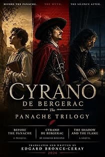

Cyrano de Bergerac
The first English translation in alexandrine verse, with prequel and sequel
by Edmond Rostand · translated by Edgard Bronce-Ceraypar Edmond Rostand · traduit par Edgard Bronce-Ceray
The bookLe livre
The first English translation of Cyrano de Bergerac to keep the alexandrine — the twelve-syllable line that carries the play's swagger — framed by an original prequel and an original sequel. Read together, the three plays answer the question the masterpiece leaves open: where the panache is forged, what it costs to wear, and what is left of a man when the person it was worn for has gone. Endorsed by Susan M. Lloyd, Rostand's biographer.
La première traduction anglaise de Cyrano de Bergerac qui conserve l'alexandrin — ce vers de douze syllabes qui porte tout le panache de la pièce — encadrée d'un prologue et d'une suite originaux. Lues ensemble, les trois pièces répondent à la question que le chef-d'œuvre laisse ouverte : où se forge le panache, ce qu'il coûte à porter, et ce qu'il reste d'un homme quand celle pour qui il le portait a disparu. Recommandée par Susan M. Lloyd, biographe de Rostand.
From the opening pagesLes premières pages
Cast: PIERRE, SAVINIEN
Setting: The courtyard of Mauvières. Centre stage, a half-loaded cart, its shafts at rest. Upstage, the old chestnut tree spreads a crimson canopy. The air grows cool; the smell of soup drifts from afar. A bell chimes.
(Pierre drags a sack toward the edge of the cart and staggers under its weight. Savinien appears, a book under his arm; he stops, watches, then quickly sets the book on the fence and rolls up his sleeves.)
SAVINIEN
Let go, Pierre!
PIERRE (turning, surprised)
You?
SAVINIEN
Me! Give me the grip!
PIERRE
Your knee?
SAVINIEN
That too! I want to bend my back and not let slip The weight you bear —
PIERRE
That we bear?
SAVINIEN
That you bear! Why the surprise?
PIERRE (panting, teasing without malice)
Forsaking your fine sonnets...
SAVINIEN
For?
PIERRE
A sack of flour? How wise! The poet in a harness?
SAVINIEN
Why not?
PIERRE
Your back?
SAVINIEN
Right here! Come, show the sack!
PIERRE
You want it?
SAVINIEN
Yes — and have no fear!
(SAVINIEN grips the sack, his rhythm steady and assured.)
SAVINIEN
A verse stands straighter when the spine has learned to bow! Now count with me, dear brother...
PIERRE
One?
SAVINIEN
Two!
PIERRE
Heave!
SAVINIEN
Starboard now! And we shall make it sing!
PIERRE
Make it sing?
SAVINIEN
Just listen close! The grain that rolls and tumbles has its song — a dose Of music! Hear!
(They tip the sack. The grain whispers as it pours. A second sack, then a third. The motion settles into an almost musical rhythm, punctuated by their breathing.)
PIERRE (impressed despite himself)
Well, well!
SAVINIEN
What?
PIERRE
Your verse can bear a heavy load!
SAVINIEN
You doubted?
PIERRE
Just a bit! But watching you explode With sweat —
SAVINIEN
Delights you?
PIERRE
More than any daring feat, Than any duel or tirade! Here the weight's concrete — No bluster!
SAVINIEN
I am learning what you do...
PIERRE
And?
SAVINIEN
Gaining ground more true! Tomorrow, when I write...
PIERRE
What then?
SAVINIEN
My pen will smell of this — The dust, the sweat...
PIERRE
The grain?
SAVINIEN
The very earth! That's bliss!
PIERRE (stopping, more gravely)
I envy you, dear brother.
SAVINIEN (surprised)
You?
PIERRE
Yes, me! You soar so high...
SAVINIEN
And you?
PIERRE
I hold so low! But tonight, beneath this sky, I see a bond take root...
SAVINIEN
What kind?
PIERRE
That binds us fast! You set your hand to sacks — I pledge my faith to last: We're right together!
SAVINIEN (simply, moved)
Yes. Two forces, and one roof.
PIERRE
How do you say such things?
SAVINIEN
The anchor...
PIERRE
And?
SAVINIEN
The sail, aloof! Without you — no horizon...
PIERRE
Without you?
SAVINIEN
No open sea! You hold — I catch the wind — together, hull and mast, We sail and never capsize!
PIERRE
That's fine.
SAVINIEN
And true. And built to last.
(A brief silence. The sun drops behind the chestnut tree. Together they seize the last sack, heavier than the rest.)
PIERRE
This one weighs double!
SAVINIEN
Heave!
PIERRE
The two of us!
SAVINIEN
As one!
(They pull together, muscles straining. The sack topples into the cart with a heavy thud.)
PIERRE (wiping his brow)
There! It's done!
SAVINIEN
The shafts?
PIERRE
Can rest! And Father will say, I think...
SAVINIEN
What?
PIERRE
"Savinien has passed the test!"
SAVINIEN (dusting off his palms)
If he says that...
PIERRE
He will!
SAVINIEN
Then let me add — and not in jest...
PIERRE
Nor flattery?
SAVINIEN
No! — I will serve the land the best If I may also serve my fire!
PIERRE
Your fire?
SAVINIEN
My verse! I want our ledgers to aspire — I want our sums to speak with words that understand —
PIERRE
What words?
SAVINIEN
That say out loud your aching back is grand As courage! That the farm won't lack For songs! That toil is noble as attack!
PIERRE (smiling, extending his fist)
A bargain struck!
SAVINIEN (clasping the fist)
A bargain?
PIERRE
Days: the farm!
SAVINIEN
And night?
PIERRE
The flight! Beneath that tree, you'll read to me...
SAVINIEN
Some words?
PIERRE
Yes! But speak true!
SAVINIEN
And?
PIERRE
Speak strong! No mirage, no blurred And hollow cloud — the real...
SAVINIEN
The field!
PIERRE
And human bone! The weight, the grain, the blood!
SAVINIEN
The real! Yes! I will own This name for it: that chestnut tree shall be...
PIERRE
Shall be?
SAVINIEN
Our "here we stand!" There, at its foot, each evening...
PIERRE
If the lamp's at hand?
SAVINIEN
I'll speak two quatrains...
PIERRE
Only two?
SAVINIEN
A modest yield! But steeped in sweat...
PIERRE
And tempered?
SAVINIEN
By the working day, the field! So that your heart may warm as much as by the fire!
(He picks up his book from the fence, weighs it in his hand, hesitates, then tucks it under his arm without opening it.)
PIERRE
Keep it shut!
SAVINIEN
But why?
PIERRE
Tonight, your page is written higher —
SAVINIEN
Where?
PIERRE Among the sheaves! Your hands have set it down in rhyme, In rhythm...
SAVINIEN And?
PIERRE
Without a word! Not one — and yet, this time, I've read it all the same!
SAVINIEN (looking up at the crimson foliage)
Now listen: the wind sweeps past And counts our burdens...
PIERRE
Counts them?
SAVINIEN
Yes! In whispers, hushed and fast!
PIERRE
And then?
SAVINIEN
It lifts them to the roof — our two words, our two strides!
PIERRE (patting the sideboards fondly)
Come on! The soup is calling...
SAVINIEN
And?
PIERRE
The night comes brave! It bides Its time. Tomorrow, same hour?
SAVINIEN
Yes!
PIERRE
Same place?
SAVINIEN
Same place!
PIERRE
Same wreck?
SAVINIEN (laughing)
Same wreck!
PIERRE
But?
SAVINIEN
Upright! And, to repay your grace, I owe you — underneath these leaves...
PIERRE
What?
SAVINIEN
A little song of fate!
PIERRE
A song?
SAVINIEN
That speaks out plain...
PIERRE
Of us?
SAVINIEN
Of you, of me — of late Hauled grain, of bending backs...
PIERRE
And?
SAVINIEN
Of the love we owe The earth, the plough...
PIERRE
The tree?
SAVINIEN
That watches from above, below! And all that holds us standing underneath this vault!
(They walk away together, shoulder against shoulder, their silhouettes cut against the crimson sky. The chestnut tree rustles; the emptied cart creaks softly. The bell chimes in the distance.)
Blackout.
Cast: ABEL , ESPÉRANCE , PIERRE, SAVINIEN
Setting: The family parlour. The table has been cleared; on the sideboard, bread, cheese, a jug of wine. The hearth is dying: the flame dwindles. Within reach, a few logs; beside an armchair, a bundle of papers tied with string.
(All are still at the table. A simple, almost solemn peace. One hears the breath of the fading fire, the creak of a beam.)
ABEL (setting down his goblet)
The day was good, I'd say...
PIERRE
The books?
ABEL
Are falling into place! I'll grant you, son...
SAVINIEN (surprised)
Me?
ABEL
Your pen has earned its grace! If your two arms tomorrow...
SAVINIEN
Confirm?
ABEL
This stride we've made! Then Mauvières will sleep a sleep...
PIERRE
More?
ABEL
Deeply laid!
PIERRE (cheerful, raising his goblet)
To the new vintage!
SAVINIEN
And?
PIERRE
To a granary swept clean!
The excerpt ends here — about 1,204 words of the published edition.L'extrait s'arrête ici — environ 1,204 mots de l’édition parue.
KindlePaperbackBrochéHardcoverReliéContextContexte
The house's theatrical flagship: Rostand translated, extended and transposed. The Panache Trilogy frames the first English translation of Cyrano de Bergerac that keeps the alexandrine — the twelve-syllable line that carries the play's swagger — between an original prequel and an original sequel. The Project then turns to Chantecler, Rostand's fable of the rooster who believes his song makes the sun rise.
Le navire amiral théâtral de la maison : Rostand traduit, prolongé et transposé. La Trilogie du Panache encadre la première traduction anglaise de Cyrano de Bergerac qui conserve l'alexandrin — ce vers de douze syllabes qui porte tout le panache de la pièce — entre un prologue et une suite originaux. Le Projet aborde ensuite Chantecler, la fable du coq qui croit que son chant fait lever le soleil.
The whole programmeTout le programme